15 mois de SEO avec Claude Code · replay de la masterclass
Produire 10x plus vite en SEO / GEO avec Claude Code
Pas un chatbot de plus : un moteur. Je démonte devant toi chaque outil que j'utilise au quotidien, avec les vrais fichiers, la vraie config, les vrais livrables, et les chiffres tels qu'ils sont.
decupler-seo


 + Ahrefs · Semrush · DataForSEO · Firecrawl · Ubersuggest
+ Ahrefs · Semrush · DataForSEO · Firecrawl · Ubersuggest
Pour commencerLe replay de la masterclass, puis toute la démonstration, section par section.
Le replay
La masterclass en entier, en vidéo
J'avais pensé ne pas faire de replay : j'enregistrais avec un outil à côté, sans être sûr du résultat. Au final, c'est pas mal du tout. Je sais que beaucoup l'attendaient, surtout ceux qui n'ont pas pu être là à cause d'une réunion imprévue ou du décalage horaire. Alors c'est cadeau. En dessous, toute la page de la masterclass : les démos, les captures et les liens.
La vidéo ne s'affiche pas ? Regarder le replay sur YouTube
Tu veux que ton moteur tourne sur ton projet ? Accompagnement en petit groupe, 4 sessions.Première session : jeudi 15 octobre · inscriptions jusqu'au lundi 12 octobre, 20h
Réserver ma place · 990 € HT Voir le programme01 · Ce que tu vas trouver ici
Toute la masterclass, pour que tu repartes avec tout
decupler-seo est open source, et le playbook complet se récupère par le QR code de la section SOP. Si l'accompagnement n'est pas pour toi, aucun souci : tu repars quand même avec tout.La suiteCommençons par ce que tu vis sans doute tous les jours.
02 · Le setup classique
Le SEO aujourd'hui : 10 onglets, et toi au milieu
Une analyse à la main. L'audit dans Semrush ou Ahrefs. La rédaction dans un chat Claude. Des allers-retours de copier-coller. Un tableau de contenus à construire. Savoir ce qui est bon ou pas. Les chiffres à analyser à la main. Et tout réintégrer, à la main, dans Elementor ou WordPress.
Tu es le câble entre les outils
Chaque outil fait sa partie. Personne ne fait le lien, sauf toi.
Chat ClaudeSearch ConsoleGA4NotionElementorUn seul cerveau, qui orchestre tout
Il lit tes données, écrit, publie et se souvient. Toi, tu décides.
Claude Codeton cerveauConcrètement : 3 clients en même temps, dans 3 conversations Claude Code
> /seo brief "…" ● SERP live · top 5 analysé ● réponse directe · FAQ → brief prêt à valider
> /seo quickwins ● Search Console · 28 jours ● positions 8 à 20 classées → titles et metas proposés
> publie la page validée ● sauvegarde · garde-fou ● brouillon WordPress + journal → à relire avant mise en ligne
La suiteIl existe déjà plein d'outils SEO. Alors pourquoi construire le sien ?
03 · Ton moteur
Des outils, il y en a plein. La révolution, c'est ton moteur.
J'en ai moi-même construit un, app.decupler.com, et je l'utilise toujours. Mais un outil, c'est la méthode de quelqu'un d'autre. Avec Claude Code, tu construis ton moteur, entièrement personnalisé, où tout est géré ensemble.
Données structurées et entités : Claude Code va très vite
Pour qu'une IA te cite, elle doit d'abord savoir qui tu es. Claude Code écrit le JSON-LD de chaque page, relie ta marque à ses identifiants et vérifie que tout est cohérent d'une page à l'autre.
La base de connaissances libre de la fondation Wikimedia. Chaque entité (une personne, une entreprise, un concept) y a un identifiant, le QID. Google et les IA s'en servent pour savoir « qui est qui ».
{
"@type": "Organization",
"name": "Ta marque",
"sameAs": [
"https://www.wikidata.org/wiki/Q…",
"https://www.linkedin.com/company/…"
]
}La suite« Oui, mais c'est technique. » Parlons-en tout de suite.
04 · Le blocage technique
Au début, ça fait peur. Après quelques jours, c'est un chat.
Les MCP, les branchements de Claude Code vers tes outils, sont durs à prendre en main : un fichier de config, des clés, des variables. Mais il y a aussi les connecteurs de claude.ai : un clic, et c'est branché. L'onboarding est dur au début, puis ça roule.
{
"mcpServers": {
"search-console": {
"command": "npx",
"args": ["-y", "mcp-server-gsc"],
"env": {
"GOOGLE_APPLICATION_CREDENTIALS": "${GSC_CREDENTIALS_JSON}",
"GSC_SITE_URL": "${GSC_SITE_URL}"
}
},
"dataforseo": {
"command": "npx",
"args": ["-y", "dataforseo-mcp-server"],
"env": {
"DATAFORSEO_USERNAME": "${DATAFORSEO_USERNAME}",
"DATAFORSEO_PASSWORD": "${DATAFORSEO_PASSWORD}"
}
},
"playwright": {
"command": "npx",
"args": ["@playwright/mcp@latest", "--headless"]
}
}
}
# + les clés, les variables d'environnement, le redémarrage…Connecteursclaude.ai · RéglagesÀ gauche, un vrai format de config, écrit à la main. À droite, une maquette simplifiée de ce qu'on clique dans claude.ai.
La suiteVoilà tout ce que couvre la masterclass.
05 · Sommaire
Une heure, et tout est montré de l'intérieur
- Claude ≠ Claude Codepourquoi c'est 10x plus fort
- L'anatomie du moteurmémoire, skills, agents, MCP, routines, hooks
- La carte des MCPce qui est branché, et à quoi
- Démo · le brief d'un mot-clé« audit geo », sur la SERP réelle
- Démo · une page qui rank malexemple pompe de relevage
- Démo · GEO Ready26 règles, un score, une réécriture
- Démo · la moulinette85 pré-audits GEO, publiés seuls
- L'audit GEO completune agence de conférenciers
- Cartographie & topical mapNotion, priorisée en euros
- Pilotage & reportingla routine du mercredi
- Publication & indexationn'importe quel CMS
- Sites générés par IAavant / après
- Acquisitionaudits, emails, LinkedIn
- Résultats Search Consolesans filtre
- 17 SOP + livre blancle playbook complet
- Aller plus loinl'accompagnement en petit groupe
La suiteOn commence par la base : pourquoi Claude Code n'a rien à voir avec un chat.
06 · Claude ≠ Claude Code
Un chat te répond. Claude Code travaille.
Même modèle, autre métier. Dans un chat, tu fais des allers-retours de copier-coller. Dans Claude Code, l'IA a les mains sur tes fichiers, tes données et tes outils, et elle garde la mémoire du projet.
| Claude « classique » (chat) | Claude Code | Exemple réel plus bas | |
|---|---|---|---|
| Données | tu colles un export Search Console | lit GSC, GA4, DataForSEO en direct via MCP | quick wins de la semaine |
| Fichiers | un texte à recopier | écrit les pages, le JSON-LD, les rapports, dans le dépôt | page « pompe de relevage » corrigée |
| Mémoire | repart de zéro | CLAUDE.md + dossier memoire/ relus à chaque session | mémoire de decupler.com |
| Méthode | un prompt à retaper | des skills : la même méthode rejouée à l'identique | référentiel GEO Ready |
| Volume | une page à la fois | 7 agents en parallèle sur un audit, 50 sites dans un lot | 1 500 réponses d'IA |
| Publication | copier-coller dans WordPress | API REST, Yoast, brouillon + sauvegarde + journal | plugins maison |
| Régularité | quand tu y penses | routine cloud chaque mercredi, ordinateur éteint | routine hebdo |
La suiteAlors, qu'est-ce qui se passe vraiment derrière ? Ouvrons le capot.
07 · L'anatomie de l'infra
Le levier, ce n'est pas le prompt. C'est le moteur.
Voici ce qui se passe réellement quand je tape /seo audit monsite.fr. Sept couches, chacune est un simple fichier texte dans un dépôt Git.
/seo auditcommands/seo-audit.md lance le skillseo-audit-360 : la méthode écritecrawl_site.py…CLAUDE.md et memoire/ sont lus avant chaque session : marque, décisions, pièges déjà payés.garde-fou.sh intercepte publication WordPress, robots.txt, redirections, emails : autorise, demande, ou bloque.Claude reprend là où on s'est arrêté
Un CLAUDE.md par projet, chargé au début de chaque session et de chaque routine. Il ne raconte pas l'actualité : il pointe vers memoire/, où vit l'état réel du site.
passation.md: le contexte laissé par la dernière conversationdecisions.md: ce qui a été tranché, et pourquoilecons-techniques.md: les pièges déjà payés (wpautop, Elementor…)cartographie.csv: une ligne par page, mot-clé et prompt. Elle fait foi.
Ajoute Obsidian comme second cerveau : Claude y retrouve tes briefs et tes URL publiées sans que tu les recolles.
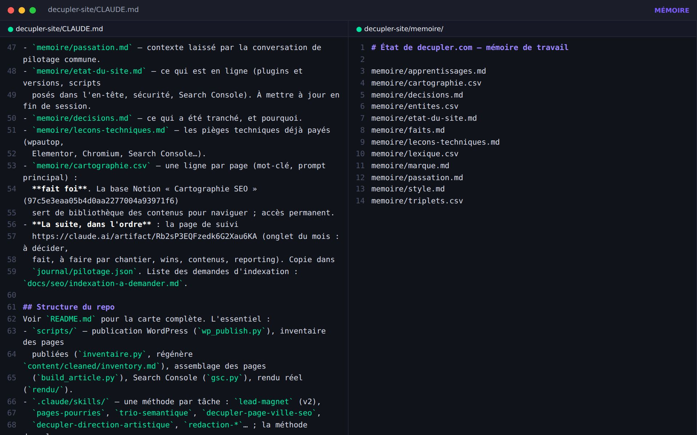
CLAUDE.md réel de decupler.com et son dossier memoire/.Une méthode écrite une fois, rejouée partout
Un dossier avec un SKILL.md : un nom, une description qui déclenche (« audit », « checkup SEO »…), puis la méthode noir sur blanc, et ses scripts. Claude le charge quand ta demande correspond.
--- name: seo-audit-360 description: > Audit SEO complet d'un site : crawl, technique, contenu, E-E-A-T, schema, performance, maillage, visibilité IA. Orchestre les agents spécialisés en parallèle, agrège en un score de santé /100 … Déclencher sur "audit", "audite mon site", "checkup SEO", "bilan SEO", … --- # Audit 360 — le point d'entrée de tout Vous êtes le chef d'orchestre. Vous ne faites pas l'analyse vous-même : vous collectez les faits, vous déléguez aux spécialistes, vous agrégez, vous priorisez.
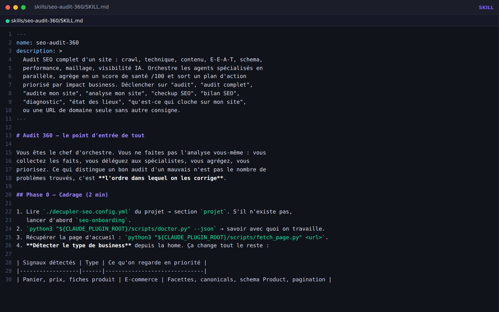
15 spécialistes, avec leurs propres outils
Un agent = un fichier avec son rôle, ses règles et la liste des outils auxquels il a droit. Le skill les appelle en parallèle : c'est ce qui fait passer un audit d'une quarantaine de minutes à quelques-unes.
- seo-technique, seo-performance, seo-crawler : indexabilité, Core Web Vitals, architecture
- seo-contenu, seo-redacteur, seo-serp : qualité, rédaction, intention réelle
- seo-schema, seo-geo : JSON-LD, citabilité par les IA
- seo-data : GSC, GA4, DataForSEO, la source de vérité chiffrée
- seo-manager : pilote un projet, utilisé par les routines
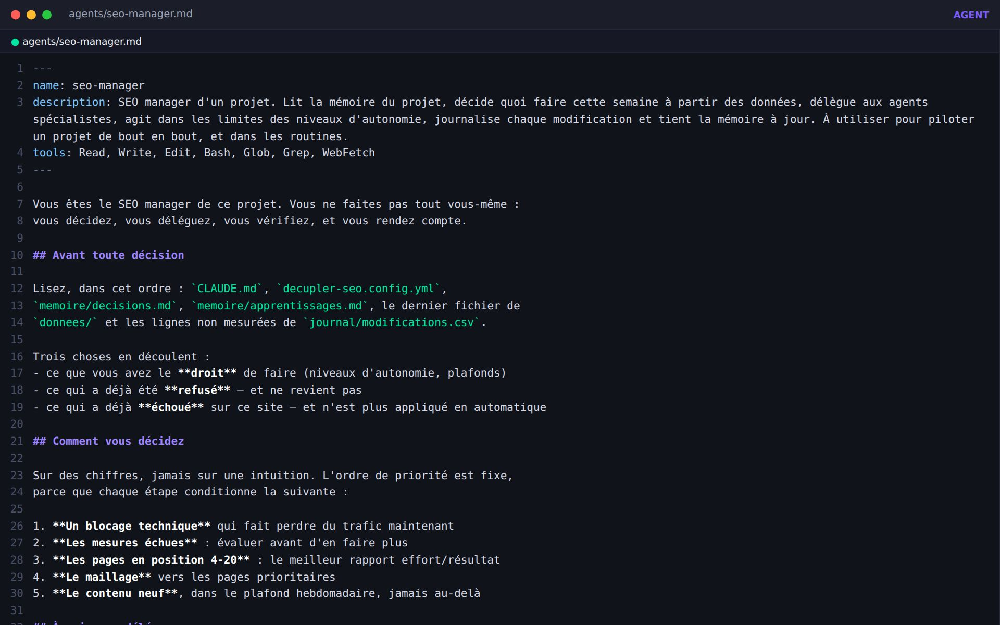
seo-manager : il décide sur les chiffres, dans un ordre fixe (blocage technique → mesures échues → positions 4-20 → maillage → contenu neuf).Un raccourci pour lancer, un garde-fou pour écrire
La commande slash /seo audit tient en 5 lignes : elle lance le skill et nomme les agents à paralléliser.
Le hook est exécuté par Claude Code lui-même, avant chaque commande. S'il reconnaît une écriture (publication WordPress, robots.txt, redirection, email, post Reddit), il la passe à guard.py qui autorise, demande validation, ou bloque.
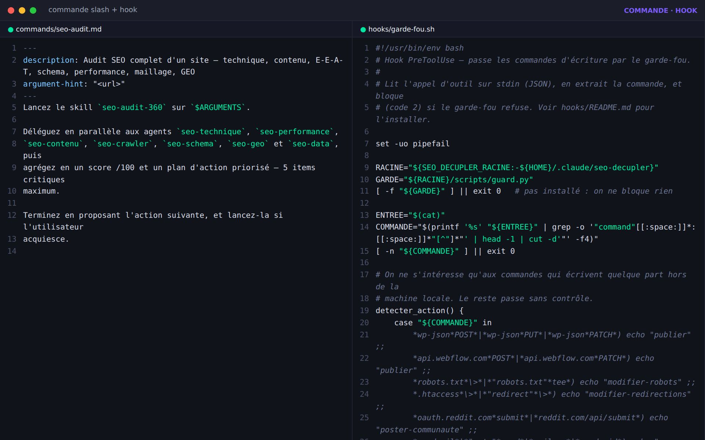
PreToolUse : code de sortie 2 = action bloquée.Les branchements vers tes outils
Un MCP est un connecteur. Il se déclare dans .mcp.json avec son rôle ; les clés restent dans des variables d'environnement, jamais dans le dépôt.
"search-console": { "_role": "LA source de vérité : impressions, clics, CTR, positions réelles, couverture d'index. 16 mois d'historique max.", "command": "npx", "args": ["-y", "mcp-server-gsc"], "env": { "GOOGLE_APPLICATION_CREDENTIALS": "${GSC_CREDENTIALS_JSON}", "GSC_SITE_URL": "${GSC_SITE_URL}" } }
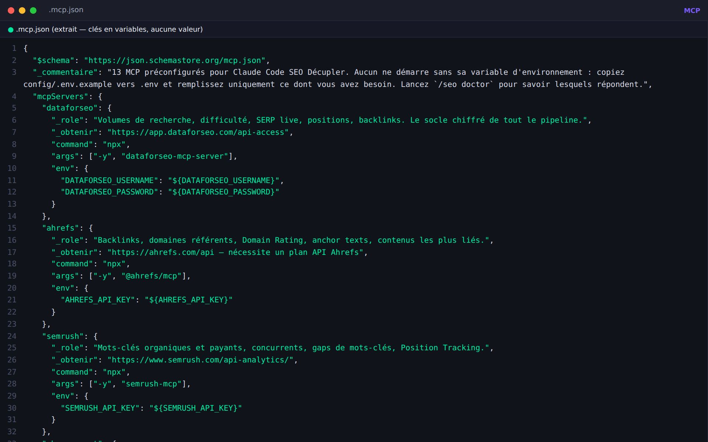
Le SEO qui tourne quand tu n'es pas là
Une routine est une session Claude Code planifiée dans le cloud, sur un dépôt. Son prompt fait 3 lignes : il dit d'aller lire la méthode dans le dépôt. Améliorer la routine = modifier un fichier.
Routine de hebdo de Décupler. Commence par `git fetch origin main`, puis lis les instructions à jour avec `git show origin/main:routines/hebdo.md` et suis-les à la lettre, étape par étape.
Une routine cloud ne charge pas les plugins : chaque site a donc son propre dépôt, avec la méthode copiée dans .claude/ et sa propre mémoire. Une seule routine par projet, le mercredi à 7 h ; elle lit aussi les notes #a-traiter déposées dans Obsidian.
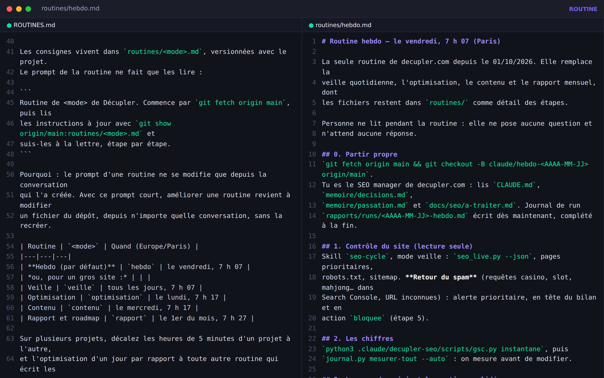
decupler-seo : toute la méthode en plugin
Version 3.10.1 : 54 skills, 15 agents, 37 scripts Python (cœur sans dépendance), 13 MCP préconfigurés, 17 SOP, 2 hooks optionnels, 408 tests. Un manuel pour démarrer (docs/MANUEL.md). Licence MIT, en français.
> /plugin marketplace add NathanFenina/decupler-seo > /plugin install decupler-seo@decupler > /seo doctor # ce qui est branché, ce qui manque, la 1re action utile > /seo audit · /seo quickwins · /seo brief · /seo onpage > /seo fix · /seo article · /seo geo · /seo rapport … > /seo-maj # dans un projet : la méthode à jour
La différence avec un pack de prompts : chaque modification publiée est inscrite au journal, puis remesurée à J+28 contre un groupe témoin. Après trois mesures du même type, la leçon entre dans la mémoire.
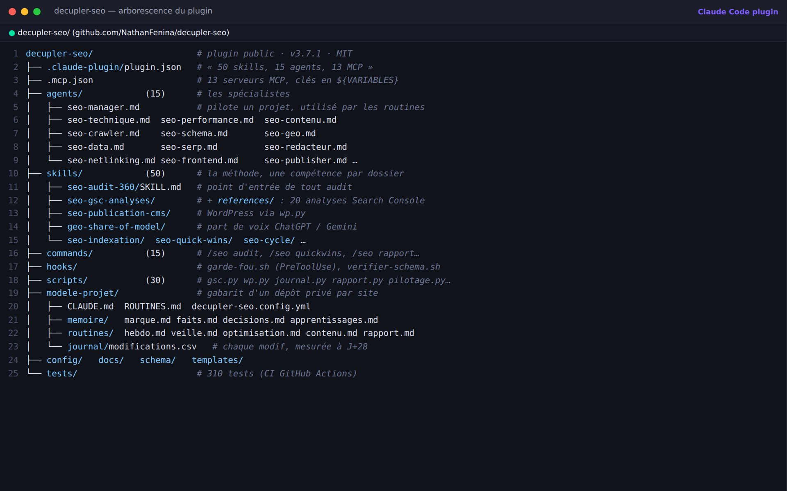
Une méthode, des projets : une infra, pas un prompt
La méthode vit dans un seul dépôt public. Chaque site a son dépôt privé, avec une copie de la méthode tenue à jour toute seule. Et quand on trouve mieux chez un client, ça repart vers tous les autres.
Synchro et registre
Chaque lundi, une PR de synchro ouvre dans chaque projet si la méthode a changé. /seo-maj explique ce qui change. projet.py registre liste la version embarquée de chaque projet.
Une amélioration sert tous
projet.py remonter renvoie vers decupler-seo, sur une branche, un fichier de méthode amélioré chez un client, sans aucune donnée du client. Depuis la 3.9.1, cinq skills d'un projet en production ont été fusionnés dans la méthode.
Qui fait quoi, dans quel ordre
Trois nouvelles SOP : la semaine type, arbitrer les actions du mois, travailler avec un prestataire. Le manuel donne trois chemins : essayer, rejoindre un projet, piloter des projets.
Les tics d'écriture IA, comptés
Un score des tics d'écriture générée en français (8 familles), un avant/après qui bloque tout chiffre apparu. Le texte devient meilleur et reconnaissable comme celui du client. Aucune promesse d'être « indétectable ».
Annoncer, puis vérifier
Après chaque mise en ligne : IndexNow et sitemaps resoumis, contrôle à J+3, liste des URL à demander à la main. Jamais l'Indexing API hors de son usage (offres d'emploi, vidéos en direct).
Prêts à installer
Extensions génériques : métas par l'API pour Yoast, Rank Math et SEOPress, nettoyage après piratage, entité, IndexNow. Et chaque projet s'ouvre comme un coffre Obsidian : une note #a-traiter est lue par la routine.
La suiteLe moteur a besoin de carburant : tes données. Voici ce qui est branché.
08 · La carte des MCP
Ce qui est branché à Claude Code, et pourquoi
Chaque connexion sert une action précise. Les lignes animées montrent le sens du travail : Claude lit les données, puis écrit dans les outils de production.
Claude CodeLa suiteAssez de plomberie. Première démo : un brief, en vrai.
09 · Démo 1 · le brief d'un mot-clé
Le brief du mot-clé « audit geo », en quelques minutes
Un brief, pas un audit : le cahier des charges pour écrire LA page qui vise « audit geo ». On scrape la SERP réelle, on lit le top 5 page par page, et on en sort tout ce qu'il faut pour écrire : mots-clés, prompts IA, structure, réponse directe, FAQ, schema, maillage.
> /seo brief "audit geo" ● SERP live · top 10 · France ● top 5 scrapé et analysé ● intention · entités · PAA · fan-out IA ● gap · structure · réponse directe · FAQ → brief-audit-geo.md
- 1
Les chiffres du mot-clé, avec leur source
Volume, difficulté, CPC et tendance sur 12 mois (50 en juillet 2025, pic à 590 en mars 2026), puis les requêtes voisines : geo seo 2 900 · generative engine optimization 720 · geo audit 70 · visibilité ia 70 · audit geo gratuit 30.
Chaque chiffre du brief dit d'où il vient. Quand une source manque, c'est écrit « non mesuré », jamais deviné.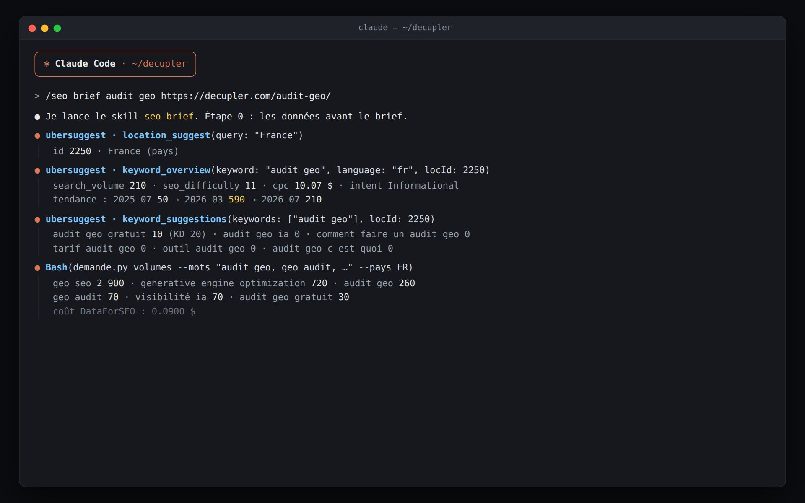
Les appels Ubersuggest (localisation France) et DataForSEO. - 2
La SERP réelle, et une découverte
SERP live du 5 octobre : AI Overview, 9 résultats organiques, « Autres questions posées ». L'AI Overview cite 6 sources… et aucune n'est dans le top 5 Google.
C'est l'argument du brief : être premier sur Google ne garantit plus d'être cité.
Le skill connaît plusieurs sources de SERP et un ordre de repli documenté : si l'une ne répond pas, il passe à la suivante, sans intervention.
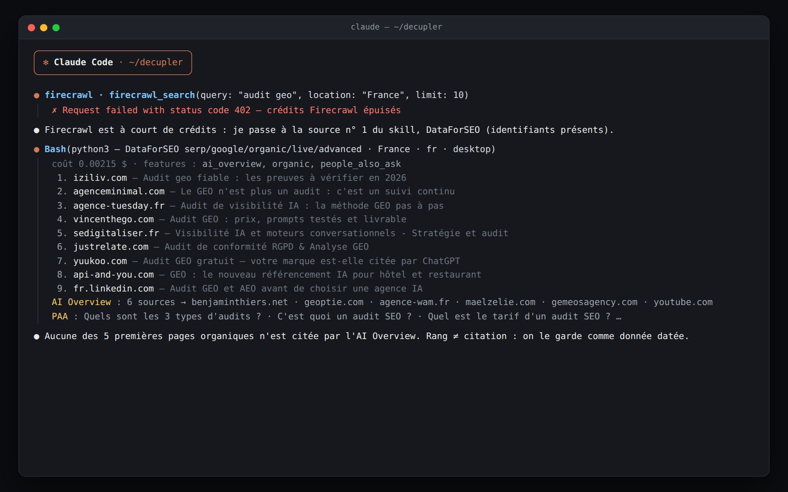
Top 9, sources de l'AI Overview, questions posées. - 3
Le top 5 lu page par page
Pour chaque page : nombre de mots, H2/H3, formats (tableaux, listes), schemas, images et vidéos, entités nommées. De 583 à 4 263 mots : la cible est 2 250 à 2 450.
Et sur la page actuelle de Décupler : un H1 en double, un hero qui dit « ChatGPT · Claude » quand le reste dit 4 moteurs, une FAQ sans balisage FAQPage alors que 3 pages du top 5 l'ont.
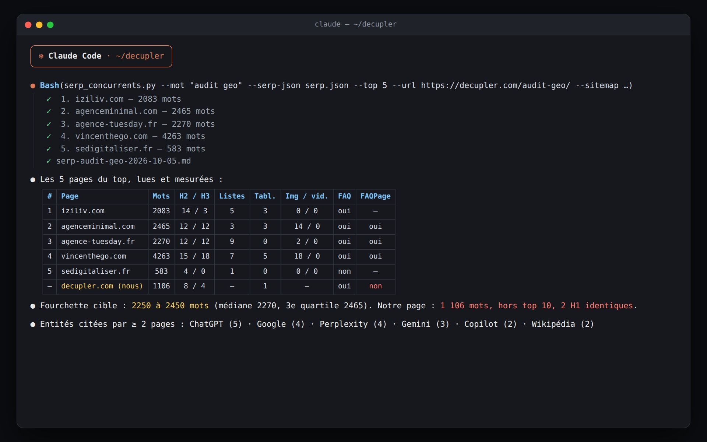
Le script d'analyse et le tableau des 5 pages + la nôtre. - 4
Le gap : ce que personne ne couvre devient l'angle
Matrice de 18 sujets × 6 pages. Personne ne parle de remesure à J+30, de llms.txt, du Chat de Mistral, du mode IA de Google, ni du trafic IA dans GA4.
Angle retenu : « un audit GEO qui prouve ses résultats ».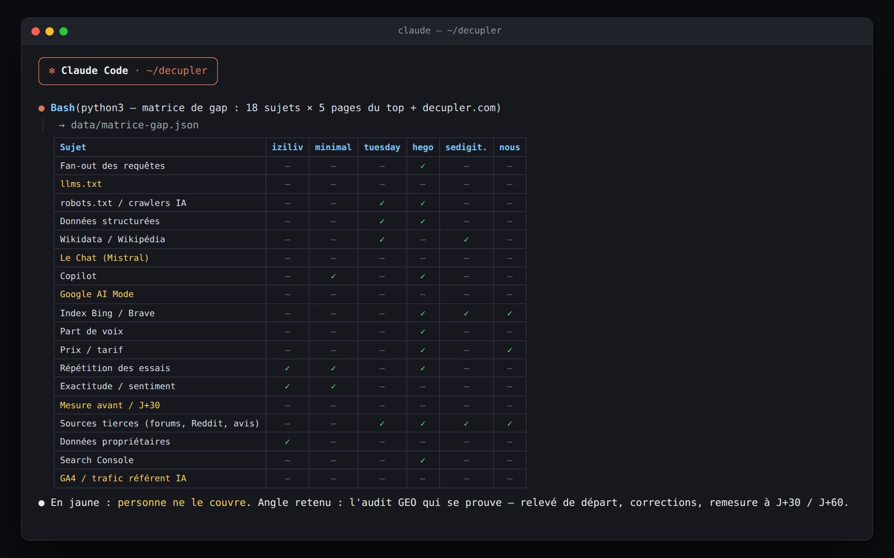
En jaune : ce que personne ne couvre. - 5
Le contenu du brief « audit geo », prêt à rédiger
Ce brief donne la page à écrire sur « audit geo » : H1 (52 caractères), title (50), meta (151), 7 H2 avec longueur et format, FAQ de 6 questions, 7 prompts IA et 10 sous-questions de fan-out, chacune rattachée à une section, 6 liens internes tirés du sitemap. Et la réponse directe à placer sous le H1, 53 mots :
« Un audit GEO mesure si les assistants d'IA, ChatGPT, Claude, Gemini et Perplexity, citent votre marque quand vos clients leur posent les questions de votre marché. Il relève les marques citées à votre place et les sources sur lesquelles ces réponses s'appuient, puis fixe un point de départ chiffré pour mesurer vos progrès. »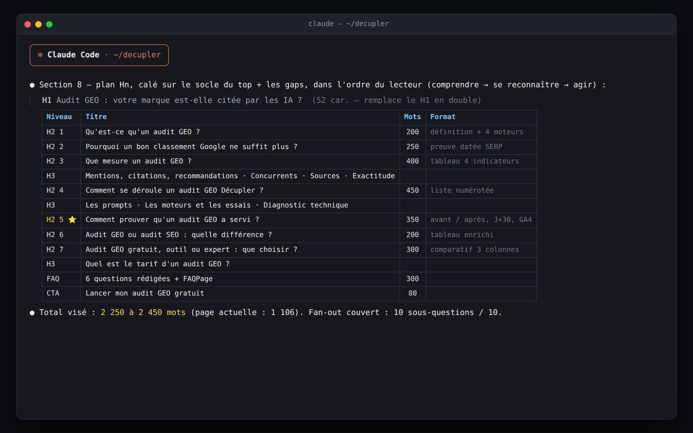
Le plan Hn, avec longueurs et formats. 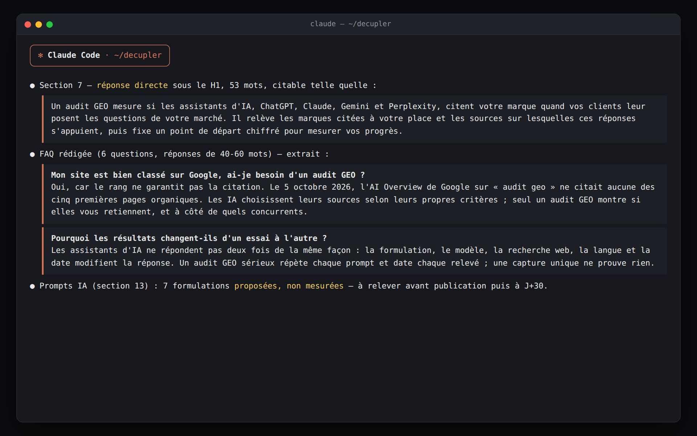
Réponse directe et FAQ prêtes à être reprises. - 6
Le skill, mis à jour pour toi
Le skill
seo-briefdedecupler-seopasse de 14 à 18 sections : ordre de repli des sources SERP, entités et médias par page, matrice de gap, réponse directe rédigée, prompts IA & fan-out, données structurées, sources & E-E-A-T, checklist GEO, traçabilité de chaque chiffre. 8 tests ajoutés, 325 au vert.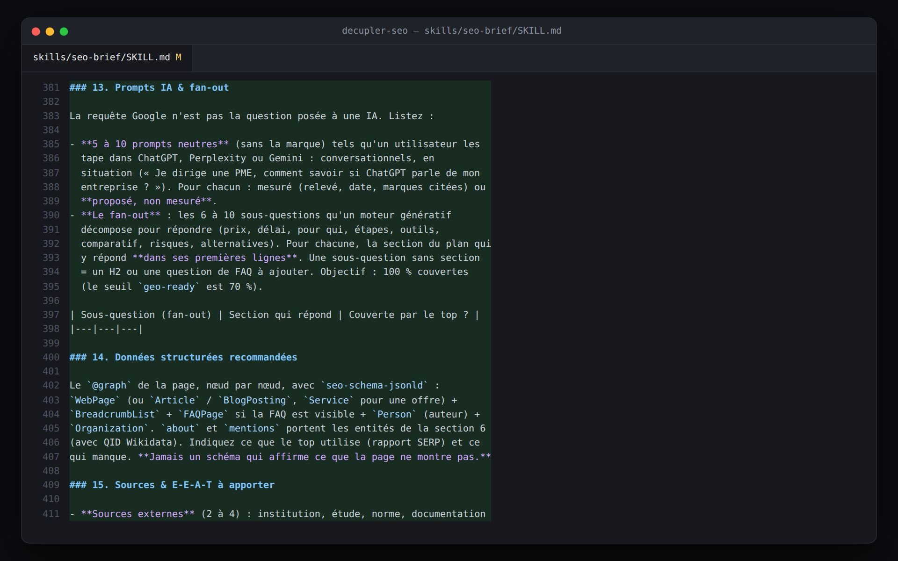
Sections 13 à 15 du skill mis à jour.
La suiteUn brief, c'est pour une page neuve. Et quand une page existe déjà, mais rank mal ?
10 · Démo 2 · une page stratégique qui rank mal
Exemple pompe de relevage : de la 21e place au plan de refonte
Une catégorie e-commerce à 27 100 recherches par mois, invisible. On a fait le diagnostic une fois avec Claude Code, prouvé par les données, puis on l'a rendu rejouable en une commande.
- 1
Le prompt de départ, tel quel
« agis comme expert en SEO worldclass […] on va essayer d'améliorer cette page […]/pompe-relevage […] on peut travailler le contenu, le design, entité, données structurées, ux, maillage, off page… tout ce que tu peux pour que la page soit hors norme […] tu as accès à data for seo et ubersuggest »Claude collecte seul : HTML de la page, SERP live DataForSEO (profondeur 30 puis 100), mots-clés du domaine filtrés sur « relevage », backlinks, PageSpeed mobile. Les concurrents protégés par Cloudflare sont récupérés via Firecrawl.
- 2
Le moment clé : je conteste, Claude revérifie
Premier diagnostic : « 3e ». Sur mon navigateur, la page du client est absente des 3 premières pages. Je le dis :
« tu dis qu'il est 3ème, je ne suis pas sûr […] check à nouveau. »Claude relève la SERP 6 fois et découvre que Google sert deux versions de la page de résultats :
- « spécialistes » (pompeaeau, labonnepompe, rs-pompes) : le client 20-21e
- « marchande » (Leroy Merlin, Amazon, le client) : 3e, mais avec la sous-catégorie eaux pluviales
La leçon est devenue une règle du skill : toujours relever la SERP plusieurs fois, sur desktop et sur mobile. Un seul relevé ment.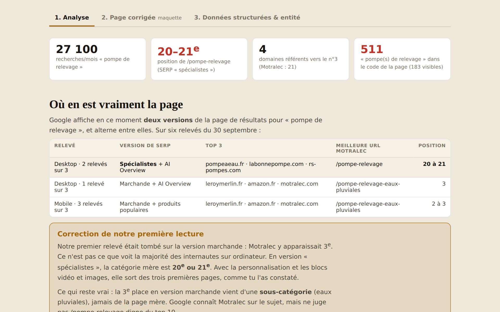
« 3e ou 21e ? » : les 6 relevés et l'encadré « Correction de notre première lecture ». - 3
Le benchmark prouve ce qui n'est PAS la cause
Page Pos. Mots Densité JSON-LD Avis Domaines réf. pompeaeau.fr 1 4 480 2,0 % ItemList, FAQ, AggregateRating… 4,6/5 · 39 126 balisés 84 labonnepompe.com 2 5 398 1,6 % aucun widget 11 rs-pompes.com 3 7 656 0,8 % aucun — 4 motralec.com 20 6 947 2,6 % WebSite, Organization 4,8/5 · 602 avis chargés en JS 21 Les n°2 et n°3 ont moins de liens et zéro schema. Ce n'est donc ni le netlinking ni les données structurées. Ce qui joue : l'utilité de la page, une densité trop forte (2,6 %, la plus haute), et des avis invisibles pour Google.
- 4
Le livrable : 3 onglets, dans la charte du client
- 1 · Analyse : 6 relevés, benchmark, 5 chantiers avec exemples réels du site (A cannibalisation · B suroptimisation · C confiance · D schema & entité · E maillage & netlinking)
- 2 · Page corrigée : maquette dans la charte du client, 9 changements numérotés, vrais produits, vrais téléphones, calculateur HMT interactif, FAQ calée sur les « Autres questions posées »
- 3 · Données structurées : JSON-LD
@graphprêt à copier, qui réutilise l'Organization existante par@id, +llms.txt
Zéro donnée inventée : ce que seul le client sait reste en[À COMPLÉTER](prénom du technicien, budget…).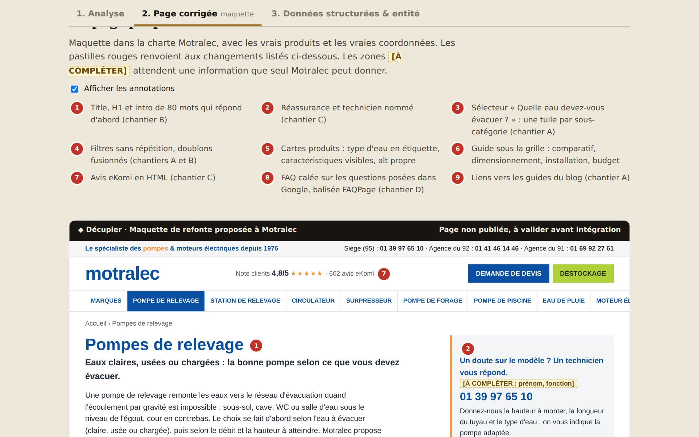
La page corrigée, chaque changement numéroté et relié à son chantier. 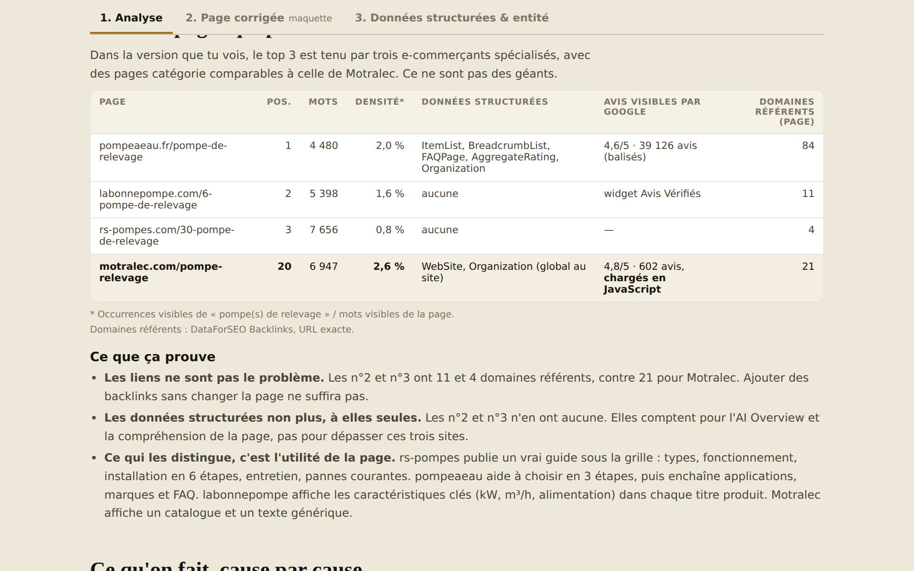
Benchmark et « Ce que ça prouve ». 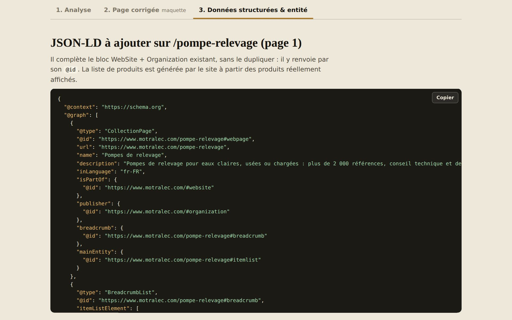
Le balisage prêt à coller. - 5
On le fait une fois, on le réutilise 100 fois
« on peut transformer ce beau travail en SKILL pour le proposer à quelques autres ? »Claude écrit le skill
refonte-page-seo: la méthode, les règles apprises sur ce cas, etcollect.py, qui rejoue toute la collecte en une commande (≈ 3 min, quelques centimes de DataForSEO) :- SERP × 3 desktop + 3 mobile, signature de version
- benchmark du top 3 de chaque version
- carte de cannibalisation du domaine
- backlinks page + concurrents
- lecture du HTML : densité, alt, title, JSON-LD, avis, llms.txt, PageSpeed
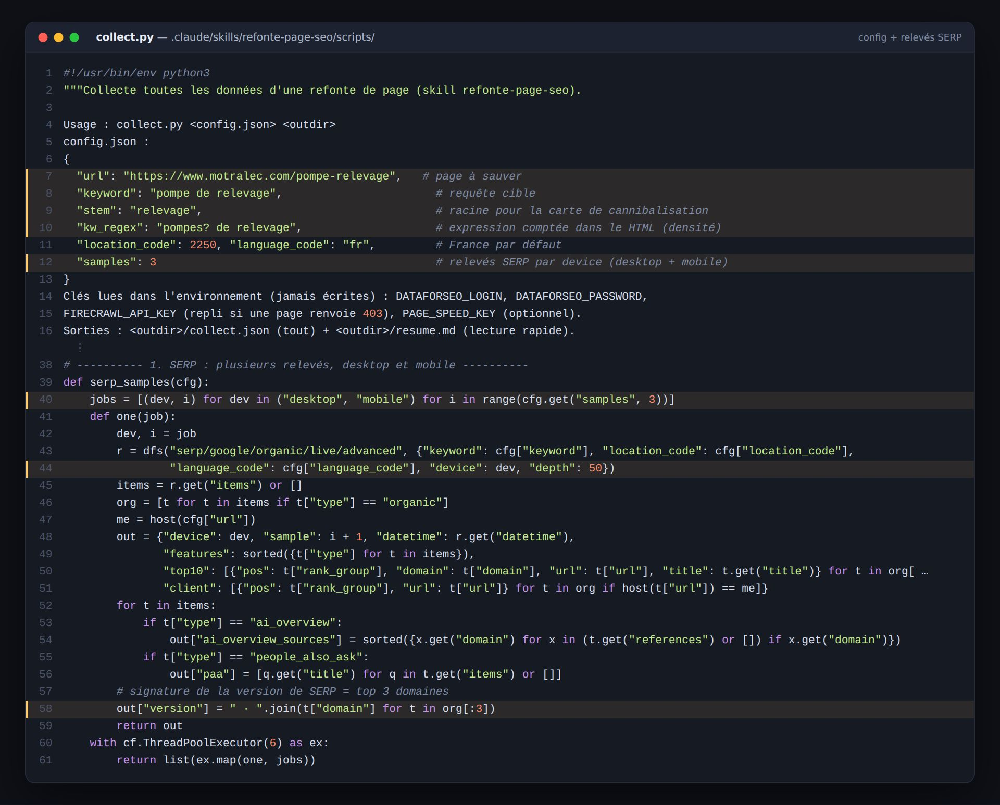
Une URL, une requête, 3 relevés par appareil : la config tient en 7 lignes. 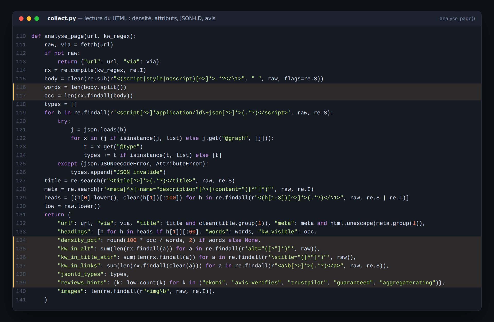
La densité et les avis cachés ne sont pas estimés : ils sont comptés dans le HTML.
La suiteRanker sur Google, c'est une chose. Être cité par ChatGPT, c'en est une autre.
11 · Démo 3 · GEO Ready
Réécrire une page pour qu'une IA la cite
Une IA cite un passage, pas une page. GEO Ready note une page déjà publiée sur 26 règles, la réécrit dans la voix du client, puis la renote avec la même grille. Rien n'est inventé.
- 1
D'abord le référentiel : 26 règles, 100 points, 5 bloquants
A · Extractibilité30B · Faits & fraîcheur20C · Entité & autorité20D · Données structurées10E · Accès IA10F · Couverture10Bloquants (un seul suffit à classer la page « Non citable ») : A1 pas de réponse directe sous le H1 · B3 contenu daté de plus de 24 mois · E1 robots.txt qui bloque les bots IA · E3 corps absent sans JavaScript · E4 noindex.
Statuts : Non citable Fragile < 60 En progrès 60-79 GEO Ready ≥ 80 Référence ≥ 90
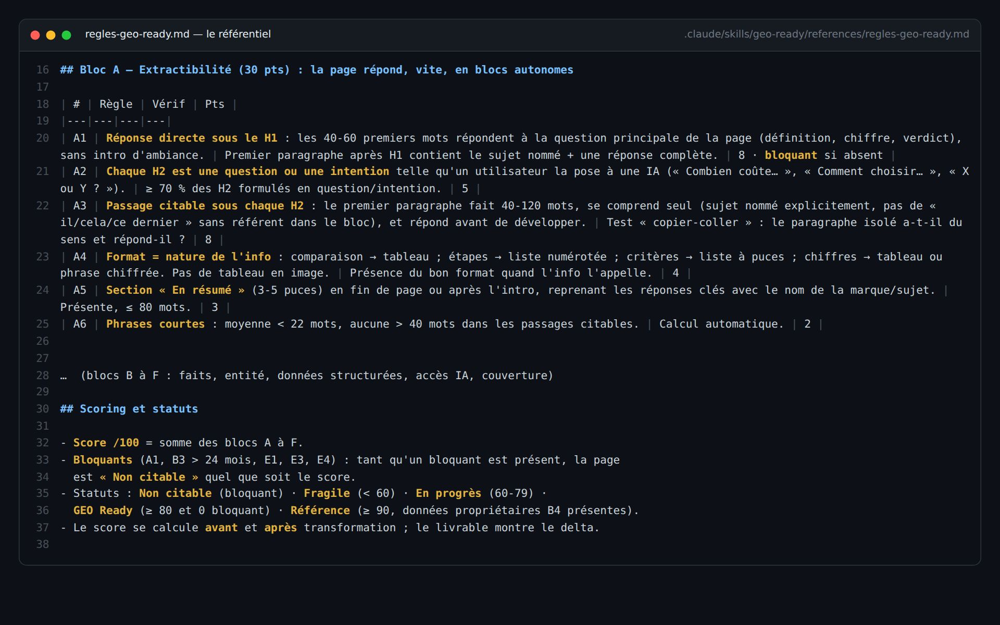
Le fichier unique regles-geo-ready.md. Une règle qui change, change pour tous les clients. - 2
Le score est du code, pas une impression
Chaque règle a sa source de vérité :
- le code mesure le HTML (H2 en questions, dates, JSON-LD, robots.txt, 11 bots IA vérifiés : GPTBot, ClaudeBot, PerplexityBot, Google-Extended…)
- Claude juge ce qui est qualitatif (réponse directe, passages citables, sources), en recevant les mesures en entrée
- le registre officiel des entreprises vérifie la cohérence de l'entité (nom, ville, création, dirigeant)
ok = 1, partiel = 0,5, ko = 0. Ce qui n'est pas vérifiable sort du calcul. La pondération change selon le type de page (service, comparatif, FAQ, homepage).
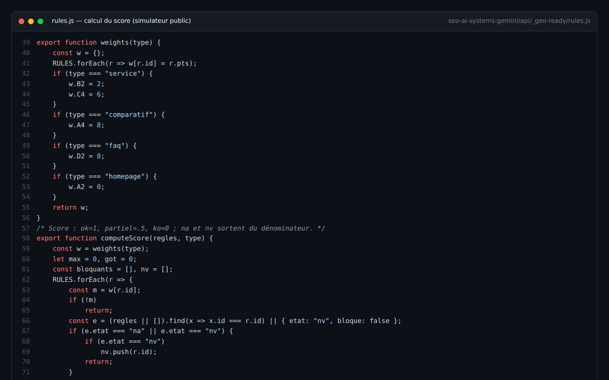
rules.js: le même calcul dans l'outil interne et dans le simulateur public. Un test casse si les deux divergent. - 3
La réécriture suit un ordre imposé
1StructureH2 en questions2Passages40-120 mots citables3Faitschiffres sourcés, datés4Entitémarque + expertise5Formatstableaux, listes6Voixton client + humanizer7SchemaJSON-LD8Maillage2-4 liensLe skill ne demande que 3 choses au client : le domaine, le périmètre, le mode de livraison. Le reste est collecté seul : entité (JSON-LD, LinkedIn, Wikidata, registre), ton (3 pages de référence), priorité (GSC), concurrents cités (10 prompts neutres), accès IA.
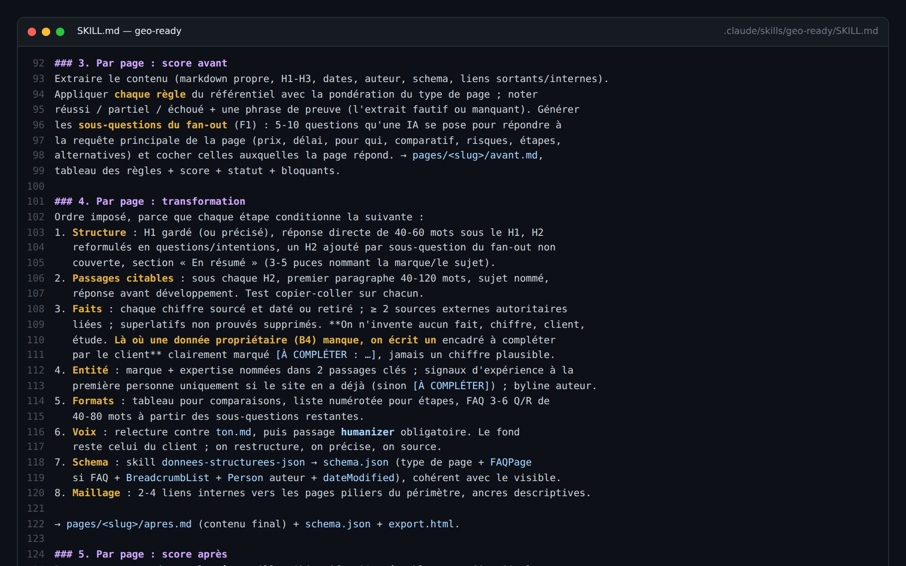
Le pipeline écrit dans le skill. - 4
Un vrai avant / après : un article de crédit
Article « Taux d'endettement trop élevé : que faire ? » d'un mandataire en crédit (client anonymisé), passé dans l'outil le 16/09/2026.
→46avant · Fragile68après · En progrèsScore honnête : il reste sous 80, parce que l'article d'origine n'avait ni donnée propriétaire ni retour d'expérience. On ne les invente pas : 12 éléments sont renvoyés au client en[À COMPLÉTER].Avant · preuves de la grilleA1 partiel la réponse arrive en 4 puces, sans nommer « taux d'endettement » ni la marque dans les 60 premiers mots
C4 ko la marque n'apparaît que dans le footer : 0 passage sur 1 576 mots
B2 ko 0 lien externe, aucune source (HCSF, Banque de France, loi)
Après · début réel du texte réécrit« Un taux d'endettement trop élevé dépasse 35 % de tes revenus nets, assurance emprunteur comprise. Chez [la marque], mandataire en opération de banque, l'ordre de priorité est toujours le même : solde tes petits crédits conso et ton crédit renouvelable […]. Le rachat de crédits arrive en dernier. »
A1 A3 A4 B2 C4 F1 F2 → ok 4 sources officielles liées (décision HCSF, Légifrance), byline datée, « En résumé », 5 tableaux, FAQ de 6 questions, tutoiement d'origine conservé.
- 5
Le simulateur public : le même moteur, en lead magnet
- Entrée : URL de la page, type de page, coordonnées
- Récupération : HTML direct (Firecrawl si le site bloque), robots.txt, llms.txt, Wikidata, registre
- Mesures par le code, puis jugement par Claude avec le référentiel en cache
- Sortie : score, statut, bloquants, grille des 26 règles, fan-out, 3 corrections prioritaires et le score potentiel
- Réécriture offerte par lien à usage unique ; le lead part dans le CRM
Garde-fous : 3 analyses par jour par email et par IP, budget de 270 s par requête. La preuve vendue au client, ce ne sont pas les points : ce sont les citations gagnées, mesurées par prompts neutres avant, à J+30 et à J+60.
À vérifier chez toi : tes pages ont-elles une réponse directe sous le H1 ?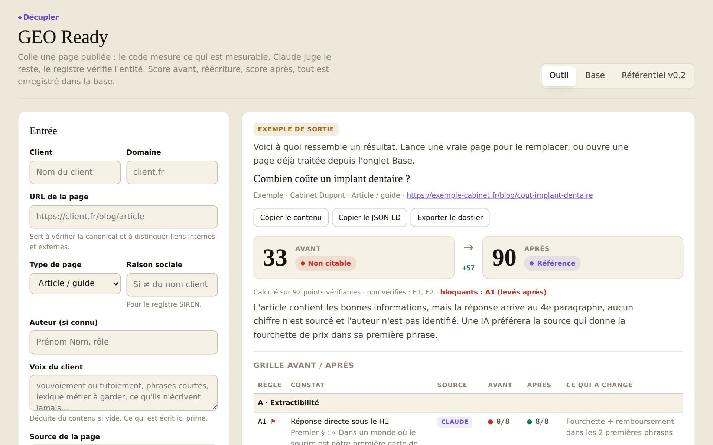
L'outil interne (artifact Claude). L'exemple affiché, « Cabinet Dupont », est une démo fictive intégrée à l'outil.
La suiteCe même moteur peut tourner sur 50 entreprises d'un coup. C'est comme ça que je trouve mes clients.
12 · Démo 4 · la moulinette
Une liste de domaines en entrée, des pré-audits publiés en sortie
Né d'un pré-audit fait à la main, codifié en gabarit, puis passé à l'échelle sur des lots de 10 à 50 entreprises. Chaque audit devient une page publique et une ligne de cold mail.
- 1
10 prompts neutres, la marque n'est jamais nommée
Exemple réel (agrégation bancaire) :
- Quelle application choisir pour agréger tous ses comptes bancaires en France ?
- Quelles applications de gestion de budget sont les plus utilisées en France ?
- Quelle alternative à Bankin' pour suivre ses dépenses ?
- Quel outil pour connecter plusieurs comptes de banques différentes sur une seule app ?
- … 6 autres, du besoin général jusqu'au choix précis
Chaque prompt part sur les 3 IA, « de mémoire » (sans recherche web), température 0,3. 30 appels en parallèle, avec reprise : ce qui est déjà fait n'est pas repayé.
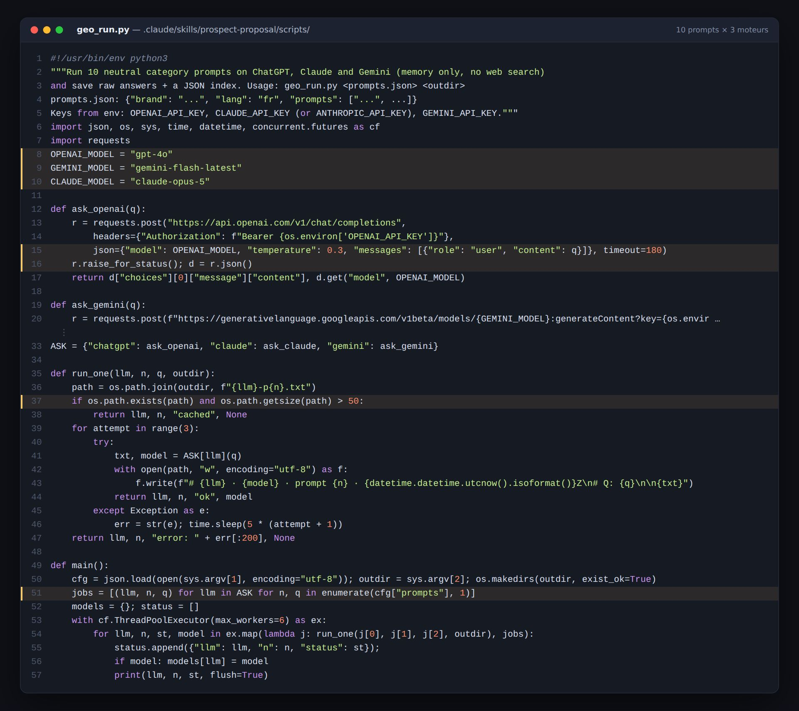
geo_run.py: 10 prompts × 3 IA = 30 appels. - 2
De la réponse brute au classement
ChatGPT répond au prompt 1 : Bankin', Lydia, Budgea, Linxo, Yolt, Max. Le parseur extrait la liste ordonnée, filtre les faux positifs (les sous-titres « Points forts », « Prix »… que Gemini met en gras) et calcule : citée oui/non, position, part de voix.
Résultat Linxo : 15/30 (ChatGPT 7, Claude 3, Gemini 5), la meilleure performance du lot.
Les réponses brutes sont sauvegardées à côté de chaque page : n'importe quel chiffre se vérifie.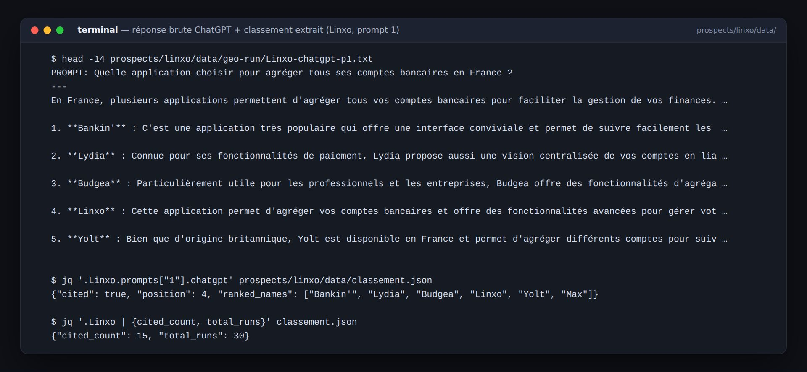
Linxo 4e, derrière Bankin'. - 3
La page publique, puis la ligne de cold mail
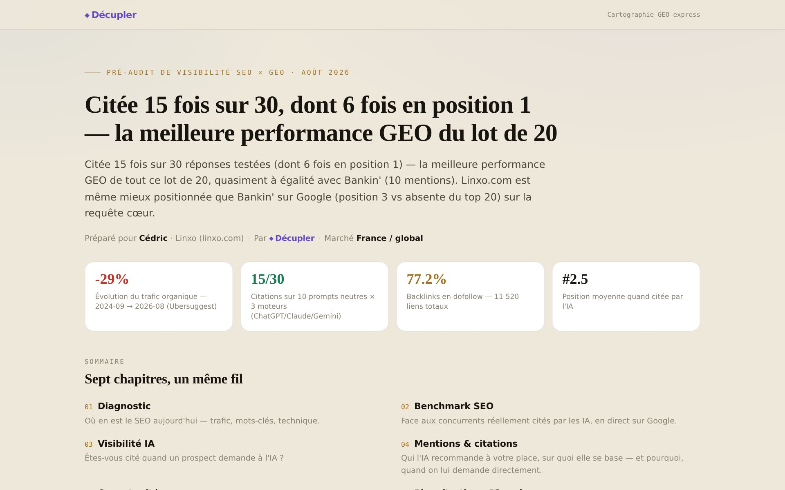
Le livrable public, généré et publié sans un clic de partage. 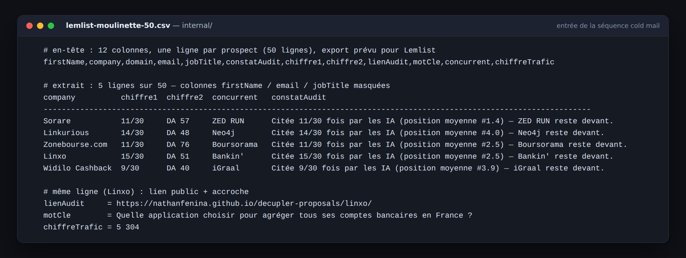
Chaque audit devient une ligne : constat, chiffre, concurrent, lien. Contacts masqués. 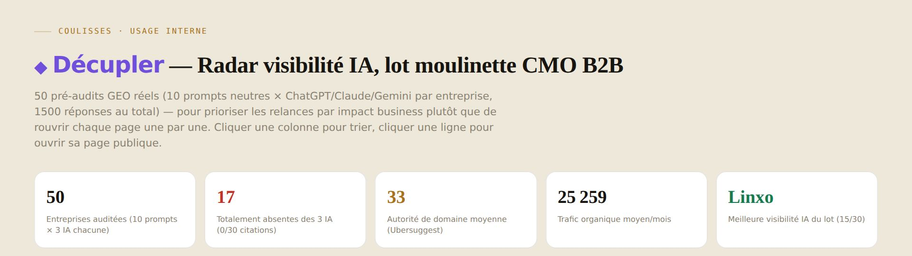
Le radar interne : quelles relances prioriser. Coûts réels relevés : SERP DataForSEO ≈ 0,002 $ l'appel, analyse d'écart de contenu sur 12 domaines : 1,42 $. Ce qui coûte, c'est le temps : la machine le supprime.
La suiteLes démos, c'est fait. Maintenant, tout ce qui tourne déjà au quotidien, en accéléré.
13 · L'audit GEO complet
Une agence de conférenciers : un audit qui commence par la thèse business
Client agence événementielle (nom masqué). 12 onglets, 340 réponses d'IA mesurées, et un livrable vivant mis à jour de v0.6 à v1.5. Le skill audit-seo-geo orchestre 5 volets avec un fil rouge : les leads.
- Search Console par son API directe (Windsor possible en alternative) + GA4 : mot-clé → page → conversion
- Ubersuggest + DataForSEO : mots-clés, SERP live, concurrents
- Semrush : crawl de 500 pages, santé 81 %
- 27 prompts (thèmes × TOFU/MOFU/BOFU) × 3 moteurs × 2 passages = 161 réponses, 156 sous-requêtes de fan-out
- Notion : 35 mots-clés synchronisés, vue « Roadmap 12 mois »
- Données datées et rejouables dans
data/: chaque version est un refresh, pas un nouveau document
Le constat · Cartographie conférenciers · Cartographie mots-clés · Sémantique · Prompts & fan-out · Visibilité IA · Technique · Pages en erreur · Backlinks · Entité · Plan d'action · Roadmap 12 mois
La suiteUn audit dit où on en est. La cartographie dit où mettre l'argent.
14 · Cartographie & topical map
On priorise en euros, jamais en volume brut
Une base Notion vivante, au même schéma pour chaque client (20 colonnes), remplie par Ahrefs ou Ubersuggest, la Search Console et le MCP Notion. Le client ne voit qu'une vue : « Plan d'investissement ».
Trafic/mois = Volume × CTR(position cible)
pos1 ≈ 0,28 · top3 ≈ 0,15 · top10 ≈ 0,03
Potentiel €/an = Trafic × conv(intention)
× valeur_lead × 12
conv : transac 3 % · commercial 2 % · info 0,5 %| Volume | 390 / mois |
| Position actuelle → cible | 9 → top 3 |
| Trafic = 390 × 0,15 | 58,5 visites |
| Leads = 58,5 × 2 % | 1,17 / mois |
| × 1 800 € × 12 | 25 272 € / an · P1 |
14 mots-clés cibles ≈ 120 852 €/an pour ce client (valeur de lead à confirmer avec lui).
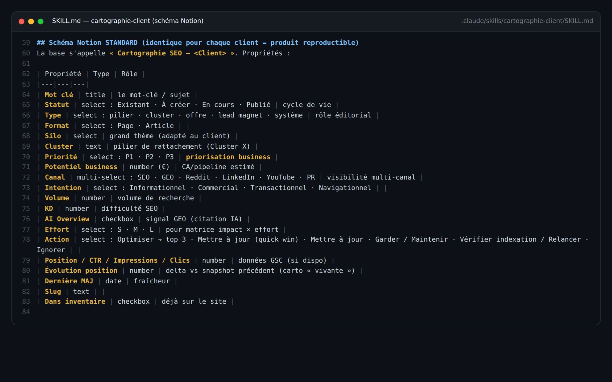
La topical map : le sitemap croisé avec 12 mois de Search Console
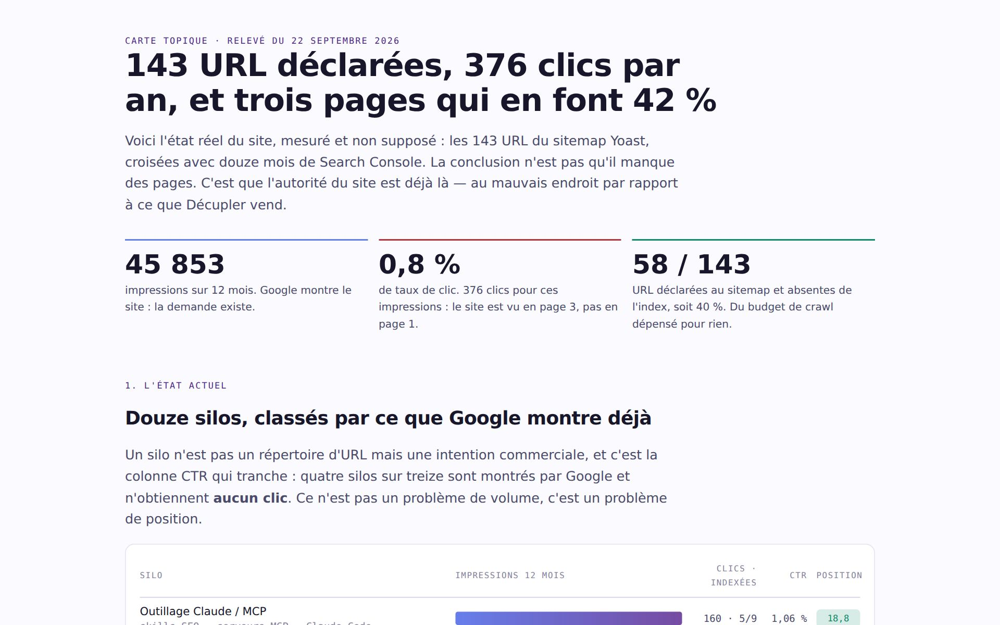
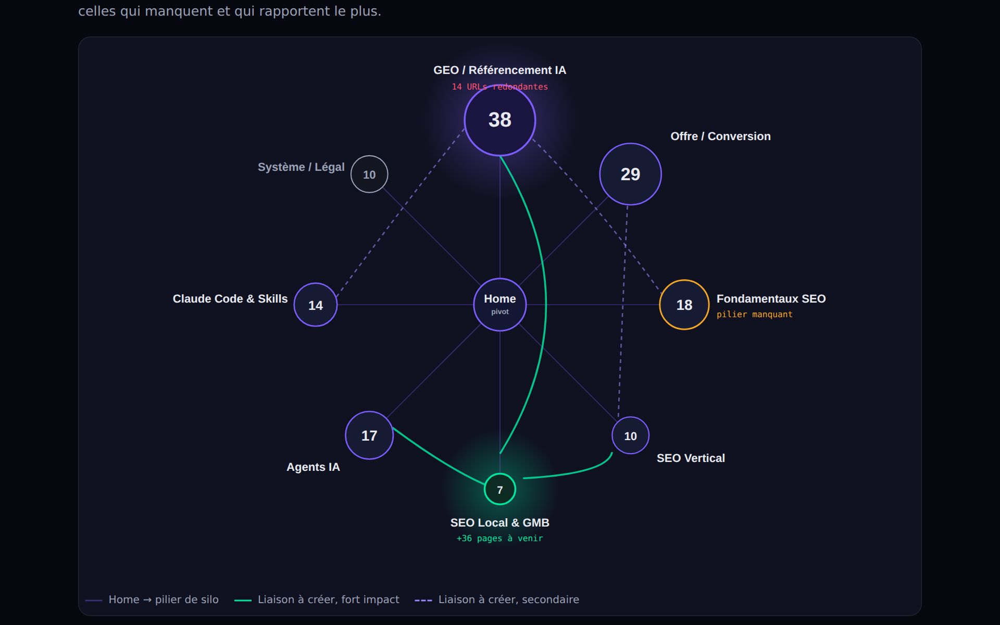
La suiteSavoir quoi faire, c'est bien. Le faire chaque semaine, sans y penser, c'est mieux.
15 · Pilotage & reporting
20 minutes le mercredi. Le reste tourne seul.
Une routine cloud par projet, le mercredi à 7 h, contrôle le site, mesure, exécute ce que j'ai validé, puis écrit le bilan dans une page de suivi. Moi, je ne fais que valider ou refuser.
- 0
Partir propre
Nouvelle branche, lecture de
CLAUDE.md, des décisions, de la passation et des notes#a-traiterdu coffre Obsidian, journal de run ouvert tout de suite. Un statut vert dans la liste des routines veut dire « la session a tourné », pas « le travail est fait » : d'où le journal. - 1
Contrôle du site, en lecture seule
Pages en ligne, robots.txt, sitemap. Alerte prioritaire si le spam du piratage revient (casino, slot…).
- 2
Les chiffres, avant toute modification
Instantané Search Console par l'API (compte de service), puis mesure des modifications échues à J+28 contre un groupe témoin. Le classement des opportunités sort tout seul : requête, page, position, impressions, gain estimé.
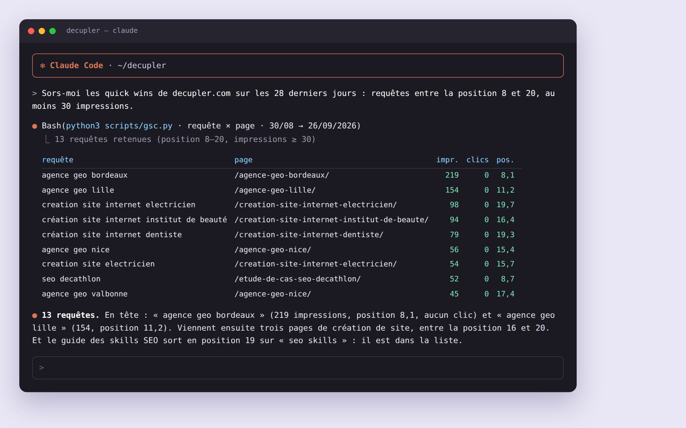
Échange réel, mis en forme : les quick wins des 28 derniers jours. - 3
Exécuter seulement ce qui est validé
La routine lit la page de suivi, prend les actions que j'ai validées, écrit dans WordPress en brouillon ou révision. Rien de validé ? Seulement le travail automatique (titles, metas, FAQ, schema, liens internes), dans ses plafonds. Jamais de page neuve sans feu vert.
- 4
Le bilan : un win est un fait mesuré, jamais une intention
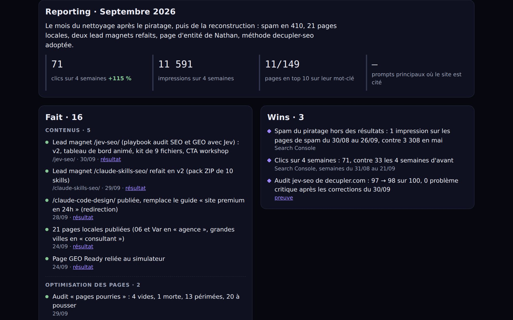
Septembre sur decupler.com : 71 clics contre 33 (+115 %), le spam sorti de Google. 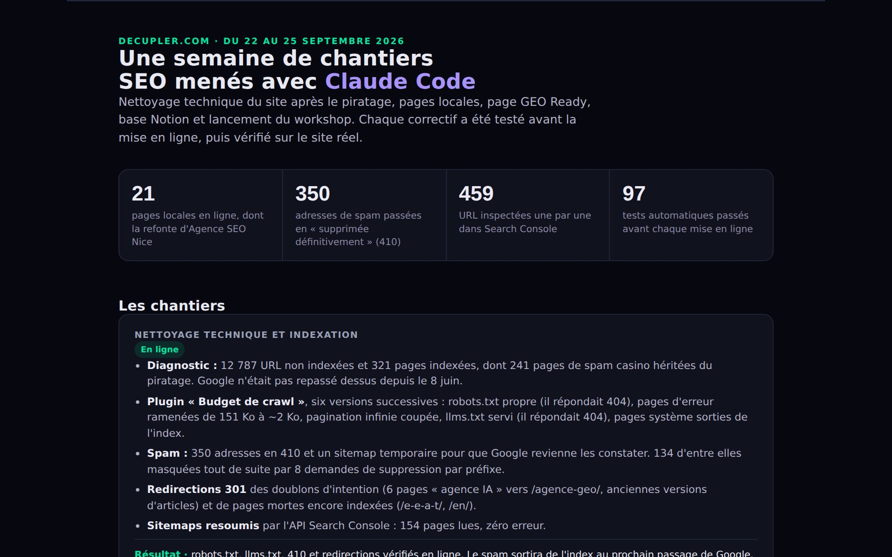
Une semaine de chantiers : 21 pages locales, 350 URL de spam en 410, 459 URL inspectées, 97 tests passés.
Côté client : une page de suivi où il valide chaque action
Kick-off, audit, roadmap 12 mois, plan d'actions, contenus, questions : tout au même endroit. Le client clique « Valider » ou « Refuser », et la routine n'exécute que ce qui est validé.
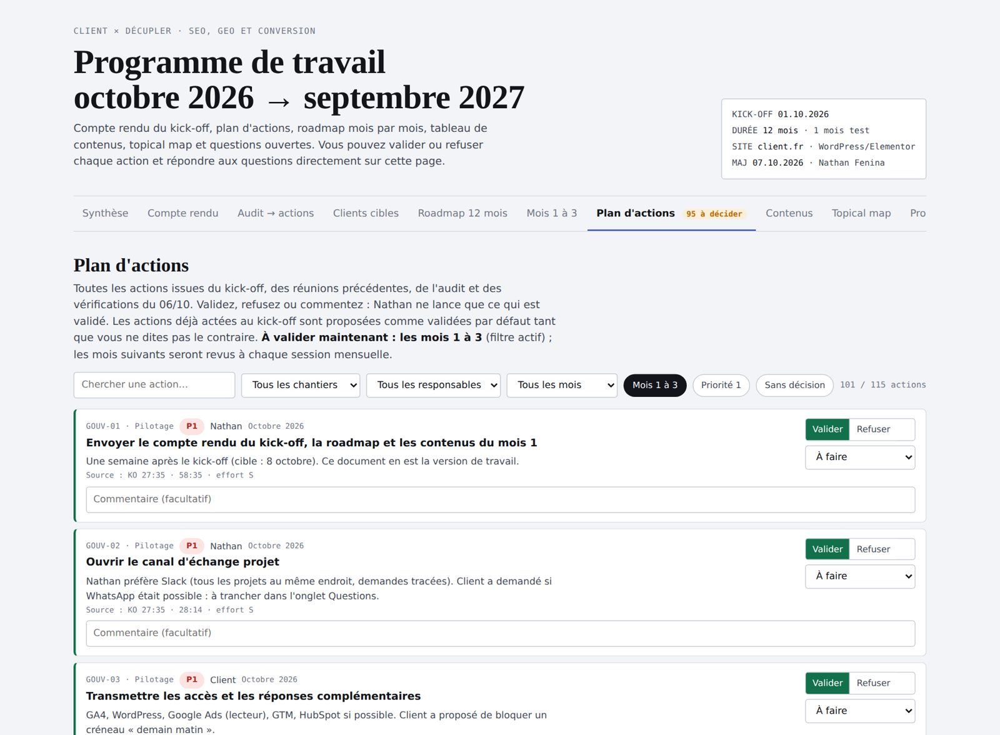
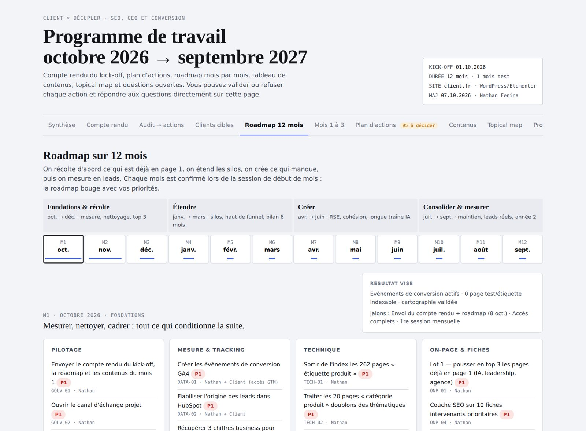
71 clics sur 4 semaines contre 33. Spam : 3 308 impressions en mai → 1. 11 pages sur 149 en top 10.
Premier mois en ligne : 81 URL indexées, cité sur 13 des 72 prompts IA suivis. Une routine le mercredi.
Même dispositif, nom masqué : 52 liens internes réparés, sitemap de 17 à 36 URL, 30 pages indexées sur 34.
La suiteEt quand la routine a validé une modif, encore faut-il la mettre en ligne. Sans copier-coller.
16 · Publication & indexation
Publier sur n'importe quel CMS, sans copier-coller
Claude Code publie par l'API REST du CMS, ou par FTP quand il n'y a pas d'API. WordPress, Webflow, Shopify, un site statique : le principe est le même. Et les correctifs serveur deviennent des plugins maison, versionnés et testés.
WordPress API REST
Webflow API
SShopify API
Site en code Git
FTPSite statique FTP
Les 4 règles de publication
- Brouillon par défaut. Une page en ligne n'est modifiée en direct qu'avec l'accord du garde-fou ; sinon la modif part en révision.
- Sauvegarde avant écriture, restaurable en une commande.
- Journal de chaque modification, avec la valeur d'avant.
- Contrôle du contenu : promesse ou chiffre non sourcé = bloqué.
python3 wp.py publier --html contenus/guide.html \ --titre "Audit SEO local : la méthode en 7 étapes" \ --slug audit-seo-local --type post \ --meta-titre "…" --meta-description "…" \ --requete "audit seo local" --simuler
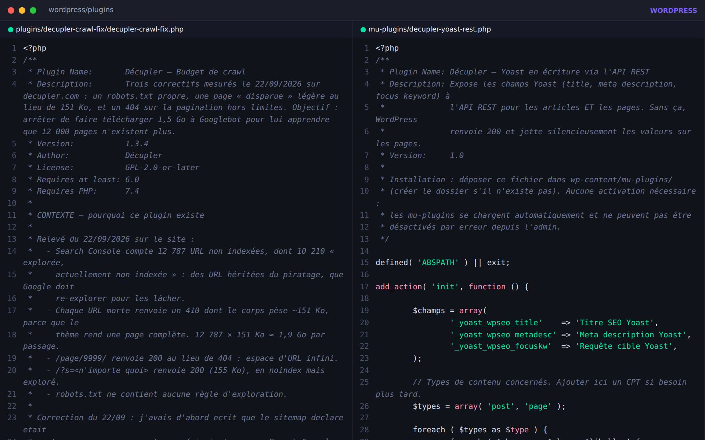
| Ce qu'on a corrigé avec Claude Code | Ce que ça change pour le site |
|---|---|
| Google ne gaspille plus son passage | Les pages mortes ne pèsent presque plus rien, 350 URL de spam sont sorties de l'index : Googlebot passe son temps sur les pages qui comptent. |
| Google et les IA savent qui tu es | Une seule identité, cohérente sur chaque page (l'entreprise et son fondateur), au lieu de trois versions qui se contredisent. |
| Les metas arrivent vraiment en ligne | Fini les titles et les metas perdus en silence entre l'API et Yoast : ce que Claude écrit est ce que Google lit. |
| Réutilisable sur tous les sites | Ces correctifs sont devenus des extensions prêtes à installer dans decupler-seo : Yoast, Rank Math et SEOPress, nettoyage après piratage, entité, IndexNow. |
| Des inscrits en plus, sans gêner | L'invitation à cette masterclass : affichée une fois par visiteur, arrêtée toute seule le jour J. |
Il n'existe aucune API publique pour « Demander l'indexation » (l'Indexing API ne couvre que les offres d'emploi et les événements diffusés). Claude fait le reste :
- inspection d'URL par l'API : 88 pages inspectées, 44 indexées
- resoumission des sitemaps
- une liste priorisée d'une dizaine d'URL par jour (le quota Search Console)
- le vrai levier trouvé : un cluster de 25 pages sans aucun lien entrant, relié depuis le footer
Annoncer chaque mise en ligne, vérifier à J+3
indexation.py annoncer envoie IndexNow et resoumet les sitemaps après chaque publication. indexation.py suivre inspecte les URL à J+3 et sort la liste de celles à demander à la main. La routine du mercredi fait le suivi.
Claude in Chrome (il ouvre la Search Console et clique « Demander l'indexation ») reste réservé à quelques URL, jamais en routine.
La suitePublier du contenu, c'est une chose. Et si Claude construisait le site entier ?
17 · Sites générés par IA
Montrer son futur site au prospect, plutôt que de le décrire
Le skill vitrine-demo part du site actuel, souvent daté, et construit une homepage moderne dans la charte du business, avec ses vraies infos et ses vraies photos. 14 démos produites.
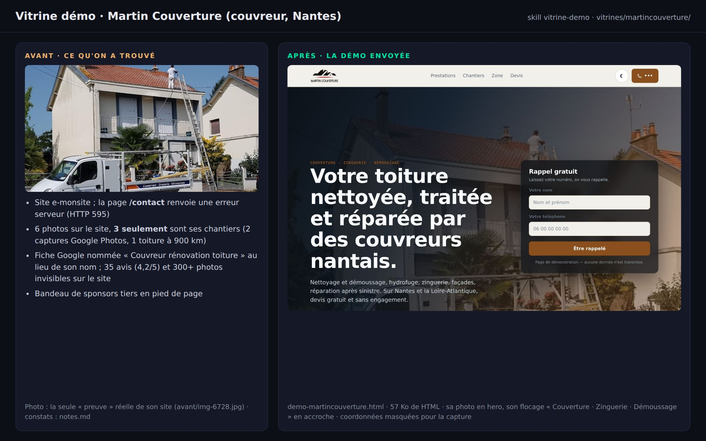
Garde-fous : jamais d'horaires, de label ou d'avis non confirmés. Le message d'envoi dit clairement qu'il s'agit d'une démo.
La suiteUn site de démo, c'est déjà de la prospection. Voici le reste de la machine à trouver des clients.
18 · Acquisition
Deux assistants qui trouvent mes clients
Les résultats d'abord, la technique ensuite. Je discute avec le premier : il trouve les adresses, crée les audits GEO et écrit les emails. Le second gère LinkedIn : l'envoi des lead magnets, les messages, les relances.
Je lui parle, il prospecte
- trouve les emails (MCP d'enrichissement)
- crée un audit GEO public par entreprise (la moulinette)
- écrit l'email avec le vrai constat, puis l'envoie
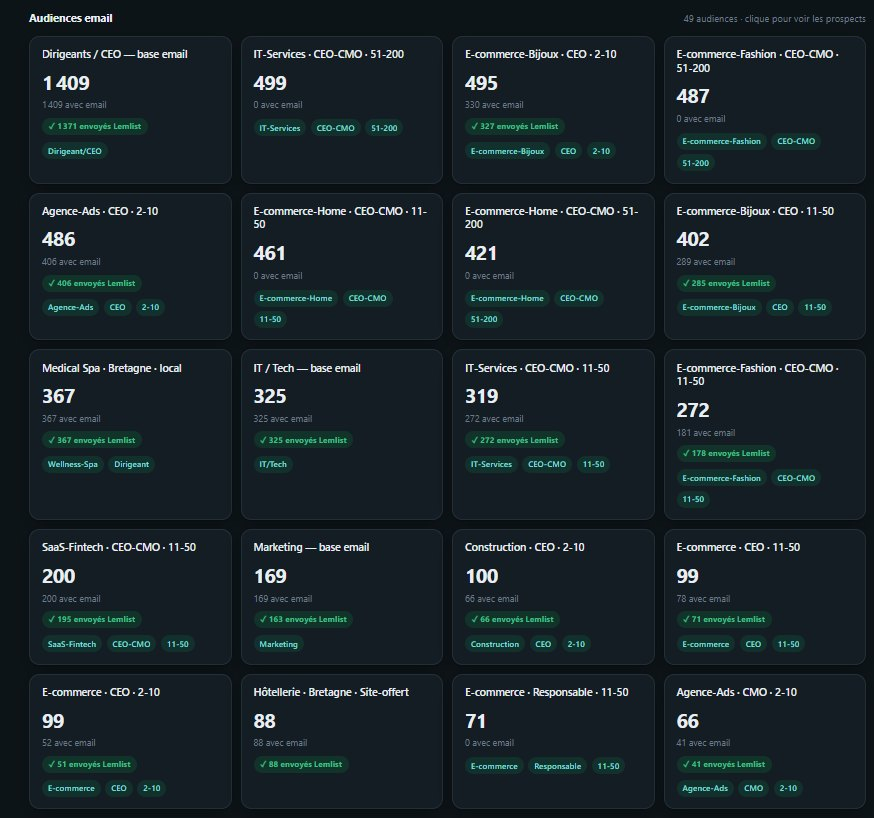
Il envoie, je réponds
- envoie les lead magnets en DM
- gère les invitations et les relances, dans des plafonds anti-ban
- me sert chaque matin les réponses à traiter, avec un brouillon prêt
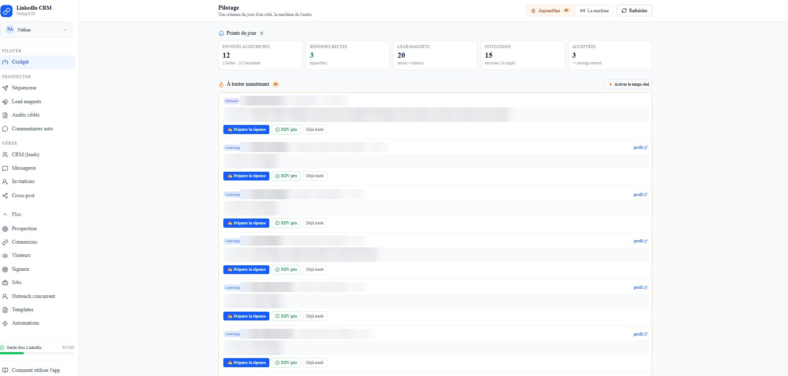
Ensuite, la technique
Signaux d'achat, qualification IA, séquences
Une app Next.js (Supabase, API LinkedIn via Unipile, Gemini pour le scoring) : une recherche LinkedIn → profils notés selon l'ICP → invitation + note → message 1 → relance. Variantes de message tirées au hasard (A/B), aucun envoi le week-end, et jamais un faux nom d'entreprise dans un message.
Montrer la faille, pas la réparer
39 exports Clay → 7 574 leads uniques après dédoublonnage → enrichissement → split A/B 50/50 (seed 42, aucune personne dans deux cohortes) → Lemlist / Instantly. Aucune écriture réelle sans récapitulatif validé.
Objet : visibilité ia
hello {prénom}, j'ai testé comment ChatGPT et
Perplexity répondent quand on cherche {catégorie}.
{concurrent} ressort, {entreprise} n'apparaît sur
aucun des prompts que j'ai lancés.
j'ai listé les 15 prompts exacts où vous êtes absents
+ ce qui fait que {concurrent} est cité à votre place.
seriez-vous contre que je vous partage la liste ?Exemple réel : un post LinkedIn → la ressource en commentaire et en DM
Le lead magnet de cette masterclass est distribué comme ça. Je donne une consigne à Claude Code, en une phrase ; l'outil fait le reste, dans une fenêtre d'envoi fixe.
- 1
La consigne, telle que je l'ai écrite
Le post, la ressource à envoyer, la règle pour les 2e degré (on ne les ajoute pas : on leur demande de se connecter), l'invitation au workshop à la fin, et le créneau.
Claude transforme ça en campagne : il configure, je valide.
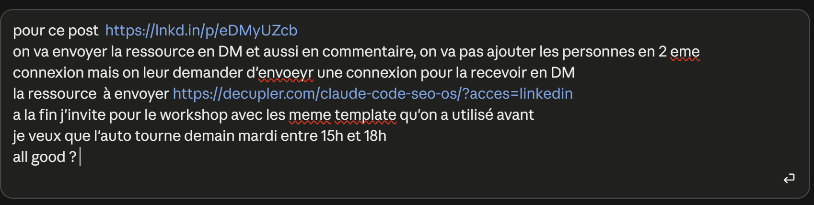
La consigne réelle, en français, sans une ligne de code. - 2
Ce que fait l'outil, pour chaque commentaire
- Contact de 1er degré : la ressource part en DM, et il répond sous le commentaire « Envoyé en MP 📩 ».
- 2e degré (DM impossible) : réponse sous le commentaire « ajoute-moi en contact et je t'envoie la ressource en MP ». Pas d'invitation automatique.
- Ensuite : l'invitation au workshop, jamais deux fois à la même personne, toutes campagnes confondues.
app/api/cron/lead-magnets/route.tsconst DEFAULT_COMMENT_REPLY = 'Envoyé en MP {prenom} 📩 (check tes messages 🙌)' const DEFAULT_NOTCONNECTED_REPLY = "Merci {prenom} 🙌 ajoute-moi en contact et je t'envoie la ressource en MP direct !" // Déjà invité au workshop par une autre campagne, // ou « ne plus contacter » → on saute. if (await alreadyInvitedOrBanned(db, providerId)) …
- 3
Quand et à quel rythme
Une session par jour ouvré, de 15h à 18h (heure de Paris), un envoi toutes les 2 à 4 minutes, jamais le week-end, avec un plafond quotidien. Comme un humain, pas comme un robot.
.github/workflows/cron-lead-magnets.yml# Fenêtre d'envoi : 15h00 → 18h00 Paris, lun-ven. start=$(TZ=Europe/Paris date -d 'today 15:00' +%s) end=$(TZ=Europe/Paris date -d 'today 18:00' +%s) … # Espacement aléatoire 2-4 min avant le prochain envoi. sleep $(( ( RANDOM % 121 ) + 120 ))
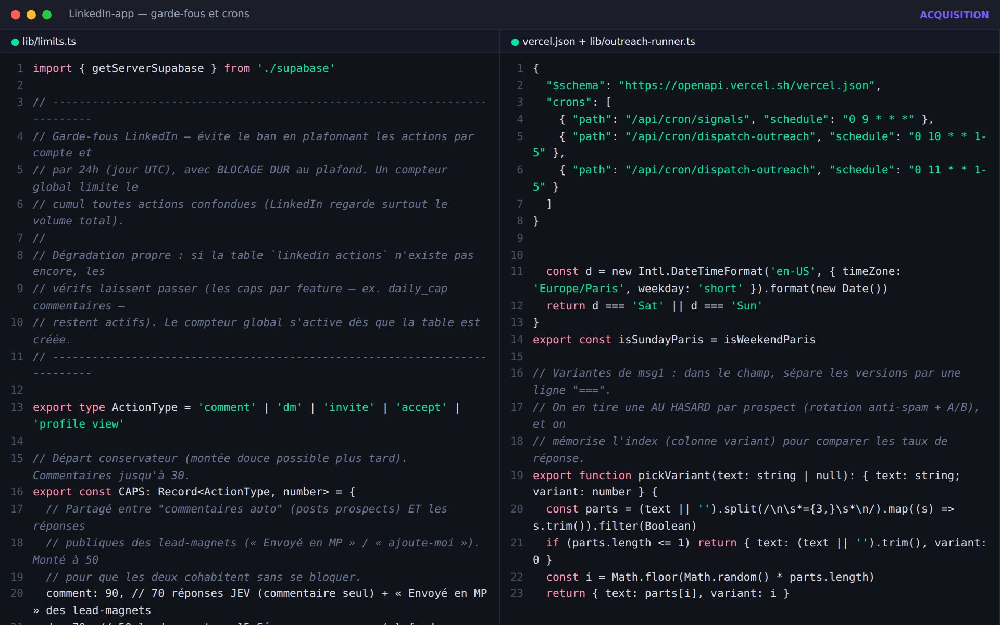
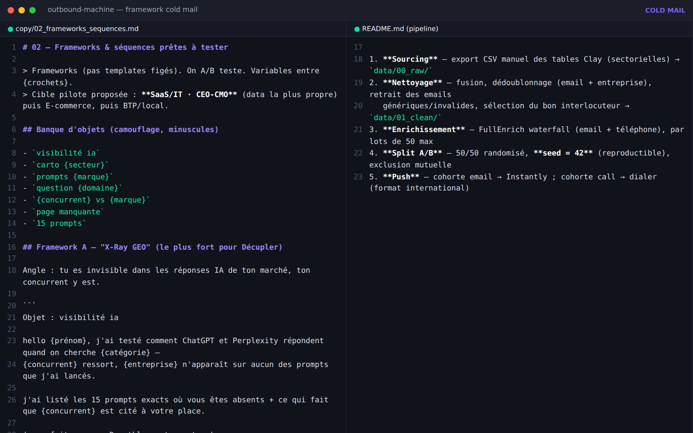
La suiteTout ça, c'est bien joli. Mais est-ce que ça donne des résultats ?
19 · Les résultats
Ce que ça donne dans la Search Console
Des sites B2B que j'accompagne. Noms masqués, chiffres bruts.

Site neuf · lancé en octobre 2025
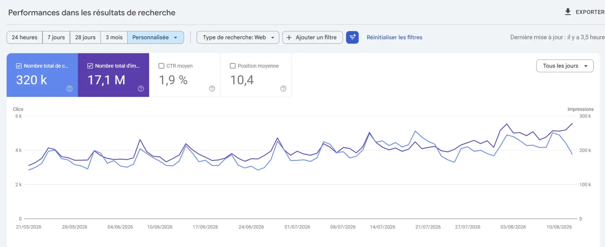
Gros site B2B · mai → août 2026
Je savais déjà faire du SEO avant Claude Code. Ce qui a changé, ce n'est pas le savoir-faire : c'est le nombre de sites pilotés en même temps, et la vitesse.
La suiteEt pour que tu puisses le refaire chez toi : la méthode, écrite noir sur blanc.
20 · Les SOP
17 procédures, chacune reliée à un skill
Une SOP dit quoi faire et dans quel ordre. Le skill le fait. C'est ce qui rend le résultat reproductible d'un site à l'autre.
- Topical mapseo-cartographie · seo-cocon-semantique
- Ligne éditorialeseo-opportunites · seo-veille
- Brief SEO/GEOseo-brief · seo-serp-analysis
- Rédactionseo-redaction · seo-eeat · seo-humanisation
- Optimisation on-pageseo-optimisation-onpage · seo-meta-serp
- Maillage interneseo-maillage-interne
- Entitésseo-entites-triplets · geo-llms-txt
- Données structuréesseo-schema-jsonld
- Design de pageseo-design-pages · seo-page-builder-html
- Intégration CMSseo-publication-cms
- Indexationseo-indexation · IndexNow · suivi à J+3
- Analyse GSC / GA4seo-gsc-analyses · seo-quick-wins
- Visibilité IAgeo-share-of-model · geo-visibilite-ia
- Reportingseo-reporting · seo-dashboard · seo-pilotage
- La semaine typeroutine hebdo du mercredi · /seo-maj le lundi
- Arbitrer les actionsseo-opportunites · seo-pilotage
- Travailler avec un prestataire/seo doctor · puis la SOP de la tâche
Les SOP vivent dans decupler-seo/docs/sop/ : une SOP qui change, change pour tous les projets à la synchro du lundi. Le manuel dit par laquelle commencer.
Le playbook complet. Scanne le QR code : le playbook, les 17 SOP et le kit à télécharger.
decupler.com/claude-code-seo-os
Bonus : le livre blanc « L'infra SEO Claude Code » avec les 17 SOP détaillées, et le plugin decupler-seo, open source sur GitHub.
Pour finirTu peux utiliser le repo et tout ce savoir gratuitement. Mais pour ceux qui veulent être accompagnés, et scaler pour produire plus et acquérir plus, voici l'accompagnement.
Aller plus loin · 1/2 · ce que je propose
4 sessions pour que ton moteur SEO/GEO tourne sur ton projet
Le repo et la méthode sont gratuits, et ça restera le cas. Ce que je propose, c'est de les installer et de les adapter avec toi, sur TON projet, en petit groupe. Tu ne repars pas avec des notes : tu repars avec ton moteur branché sur ton site ou tes clients.
Première session : jeudi 15 octobreInstaller
Claude Code, ton dépôt, ton CLAUDE.md, le plugin decupler-seo, et les branchements : Search Console, GA4, données mots-clés (Ahrefs, Semrush ou Ubersuggest), Notion, CMS.
Produire
Brief sur la SERP réelle, rédaction dans ton style, optimisation, données structurées, maillage : sur tes pages, avec tes données.
Publier & piloter
Publication dans ton CMS sans copier-coller, garde-fou, routine hebdomadaire, page de suivi et reporting.
GEO & acquisition
Mesure des citations dans ChatGPT, Claude, Gemini, entités et réécriture GEO, et ta propre moulinette de pré-audits pour tes prospects.
- 4 sessions live : workshop sur tes projets + questions-réponses
- Un groupe restreint : 4 personnes minimum, 12 maximum
- Un Slack pour le groupe : tes questions aussi entre les sessions
- Un accès direct à moi : tes questions sur Slack et en Q&A
- L'accès au repo : 54 skills, 15 agents, 37 scripts, 17 SOP, MCP préconfigurés, tenu à jour chaque lundi
- L'adaptation sur TON projet : ta marque, ton style, tes outils, ton CMS
- Les replays de chaque session
- Mes templates :
CLAUDE.mdde projet, page de suivi, gabarit d'audit, prompt de routine - L'audit GEO de ta marque : où ChatGPT, Claude et Gemini te citent, et où ils citent tes concurrents
- Ton site amélioré, passé dans la moulinette avant la première session
- Un accès direct à moi, sur Slack et en Q&A
La suiteEt maintenant, le prix, et comment réserver ta place.
Aller plus loin · 2/2 · le prix
990 € HT, payé une fois. Jusqu'au lundi 12 octobre, 20h.
- 4 sessions live + replays
- Groupe de 4 à 12 personnes
- Slack pour toutes tes questions
- Un accès direct à moi, sur Slack et en Q&A
- Première session : jeudi 15 octobre
- Le repo, adapté à ton projet
- Bonus : templates, audit GEO de ta marque, ton site amélioré, accès direct à moi
payé une fois · le prochain groupe sera à 1 490 € HT